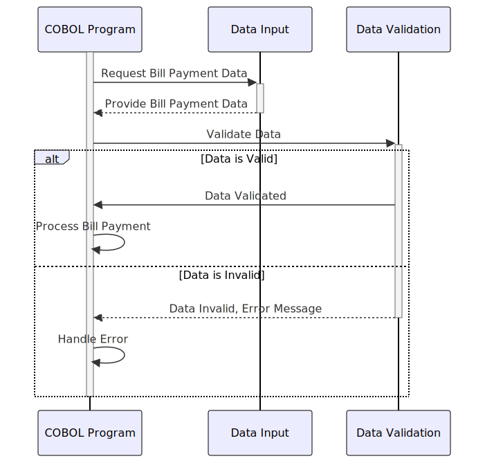

Gerado em: 1º de outubro de 2024
Título do Documento: Especificação da Estrutura de Dados para Pagamento de Contas
Descrição Resumida: Este documento descreve a estrutura de dados para lidar com transações de pagamento de contas dentro de um programa COBOL. Ele define como o programa armazena e organiza informações relacionadas a cada pagamento, incluindo detalhes como ID da transação, informações da conta, valor do pagamento e status do processamento. A estrutura foi projetada para ser utilizada em diferentes cenários de saída, com layouts separados para exibições baseadas em caracteres e, potencialmente, outros formatos.
Histórias do Usuário: Como analista de dados, preciso garantir que apenas registros válidos sejam usados para análise. Isso inclui verificar a integridade dos dados de transações de pagamento de contas, o que é crucial para relatórios financeiros e análises precisas.
Épico Relacionado: 4 - Processamento de Transações
Requisitos Técnicos:
COBIL0AI e COBIL0AO.COBIL0AI usa uma combinação de tipos de dados numéricos e alfanuméricos para processamento interno eficiente.COBIL0AO redefine COBIL0AI para dividir os dados para exibições baseadas em caracteres, provavelmente para interfaces de usuário ou relatórios.TRNNAMEL (interno) e TRNNAME[C,P,H,V,O] (exibição) armazenam o nome ou identificador da transação.CURDATEL (interno) e CURDATE[C,P,H,V,O] (exibição) armazenam a data da transação.CURTIMEL (interno) e CURTIME[C,P,H,V,O] (exibição) armazenam a hora da transação.PGMNAMEL (interno) e PGMNAME[C,P,H,V,O] (exibição) armazenam o nome do programa para rastreamento.ACTIDINL (interno) e ACTIDIN[C,P,H,V,O] (exibição) armazenam o ID da conta envolvida.CURBALL (interno) e CURBAL[C,P,H,V,O] (exibição) armazenam o saldo atual da conta.CONFIRML (interno) e CONFIRM[C,P,H,V,O] (exibição) armazenam um sinalizador de confirmação (provavelmente para sucesso do pagamento).ERRMSGL (interno) e ERRMSG[C,P,H,V,O] (exibição) armazenam mensagens de erro.Modelos Relacionados
transactionName (String): Nome ou identificador da transação.transactionDate (Date): Data da transação.transactionTime (Time): Hora da transação.programName (String): Nome do programa que processa a transação.accountId (String): ID da conta envolvida no pagamento da conta.currentBalance (Decimal): Saldo atual da conta.confirmationFlag (Boolean): Indica se o pagamento foi bem-sucedido.errorMessage (String): Armazena quaisquer erros encontrados durante o processamento.Configurações:
Melhorias no Código:
Melhorias na Segurança:
IMPORTANTE: Qualquer nome ou valor no resultado precisa ser encapsulado por crases como exemplo.
Diagrama Conceitual:
–Made by “Smart Engineering” (by Compass.UOL)–